A practical guide to estimating cross-media audience usage with copulas as an alternative to traditional data fusion approaches.
media measurement
statistics
copulas
Author
Affiliation
Christel Lacaze Swift
BBC
Published
July 18, 2025
Abstract
In media measurement, each medium (TV, radio, online, print…) is traditionally measured by a separate survey or panel that is accepted and governed by both advertising buying and selling sides and described as the “media currency”. In the case of campaigns spanning more than one media, and for media owners with presence across more than one media type, we are often interested in estimating cross-media usage. Data fusion is a widely accepted technique to bring together separate datasets based on common variables. With the increasing use of synthetic datasets, another approach could be based on multivariate modelling such as Copulas.
Bringing separate datasets together is a common issue in media measurement because traditionally each medium is measured by a different system: in the UK, TV is measured by Barb, radio by RAJAR, published media by Pamco, outdoor media by Route etc… These separate media studies are called “currencies” because they are governed by joint industry committees with representatives from both the buying and selling side, and are therefore accepted as the trading system for each medium.
Advertising campaigns on each medium are planned, bought and traded using these separate studies. However there is a need to understand how many people have been reached and how many times across all media for each campaign. For media owners present across more than one media type, they also want to be able to measure their combined audience regardless of media.
This is mainly done using data fusion (see Ipsos’s white paper (Sharot 2011)) where the best statistical matches are found across studies and brought together to form one fully granular dataset. A prominent example of this is the IPA’s Touchpoints study. To find good matches between respondents from the different datasets, a good set of explanatory common variables is crucial. Data fusion relies on the assumption of conditional independence, meaning that for example we assume that tv viewing behaviour can be fully explain by these common hooks. In practice this is rarely the case and the remaining unexplained variance leads to what is commonly called “regression to the mean”: the interaction between two fused variables is never as strong as it would be if they were coming from the same study, and it ends up somewhere between the truth and what it would be in the case of independence (i.e. one variable has no association with the other). However this is seen as an acceptable trade-off as the fused datasets allow full flexibility in data analysis.
In this article, we explore another way to bring separate univariate distributions together using copulas, a very flexible statistical technique for multivariate modelling. With the help of reproducible examples, we demonstrate the process of recreating a simulated dataset from the observed correlation and marginal distributions of a real dataset. The use of the Tetrachoric correlation is particularly well-suited for the case of zero-inflated distributions when the main objective is to preserve the combined reach.
2 a short introduction to copulas
2.1 overview
Copulas are used to model the dependence structure of multivariate distributions. They were introduced by Abe Sklar (Sklar 1959) in 1959 and are particularly popular in quantitative finance for risk management and portfolio optimisation.
A copula takes as input random variables \(U_i\) that are uniformly distributed on \([0,1]\) and it will then output their joint cumulative distribution: given the uniforms \(U_1, ...,U_k\) a copula \(C\) would output \(C(u_1,... u_k) = P(U_1 \leq u_1, ...,U_k \leq u_k)\).
The property called the Probability Integral Transform, also known as the Universality of the Uniform, states that any continuous distribution can be converted to a standard uniform distribution and vice-versa: if \(X\) is a continuous variable with cumulative distribution \(F_X\), then the random variable \(Y := F_X(X)\) has a standard uniform distribution.
Using this property we can then map the uniform margins from our copula to any continuous distribution using their quantile function.
Working with copulas means that we can separate the problems of modelling the margins and modelling the dependence structure. These tow steps can be done independently.
In practice, a possible multivariate modelling workflow could be as follows:
- given a multivariate distribution, take their margins and find the best univariate model for each one.
- transform each margin by taking their pseudo-observations, i.e. their ranks: this will make each margin uniformly distributed on \([0,1]\).
- find a good copula that fits the resulting dependence structure.
Then to produce a random sample from this modelled distribution:
- create a random sample from the chosen copula: each margin will be \(U[0,1]\) but they will be linked by the chosen dependence structure.
- transform each margin to the chosen univariate distributions: the dependence structure will be preserved.
2.2 some examples of copulas
The main families of copulas are the elliptical (e.g. Gaussian and Student-t) and Archimedean copulas (e.g. Clayton, Frank, Gumbel, Joe).
Different copulas allow for different dependence shapes, including asymmetrical, and different emphasis on the tails.
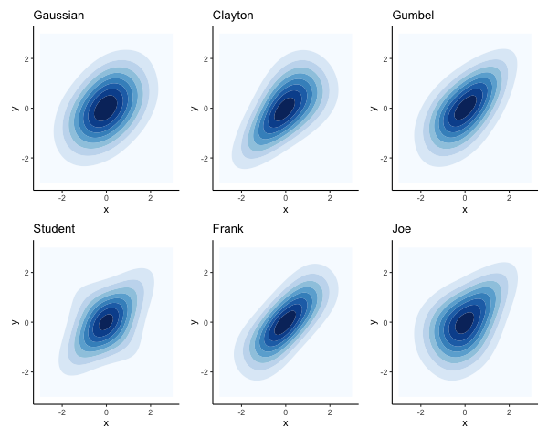
examples of copulas
The Archimedean copulas only take one parameter which means they can only be used when we assume the same dependence between all pairs of variables.
The Gaussian copula is based on a correlation matrix where each pair of variables can have their own value. The same applies to the Student-t with an added parameter \(\nu\) for the degrees of freedom which controls the tail dependence: lower values correspond to heavier tails, so that extreme joint events are more likely. The Student-t copula approaches the Gaussian as \(\nu\) increases.
2.3 walk through with a simulated example
Here we show how to go from a multivariate normal distribution with a given correlation matrix to a multivariate distribution with the same correlation but with different margins: a Gamma, a Beta and a Student-t.
The multivariate normal distribution (MVN) is essentially a Gaussian copula with Gaussian margins. It is easy to generate a random sample from a MVN from most statistical tools, and it can even be done in excel. In R, we can use MASS::mvrnorm. More complex copulas can be found in the dedicated copula package (see (Yan 2007)).
library(MASS) # to use the multivariate normal distribution mvrnorm# make sure to load tidyverse after MASS so that the select function comes from dplyrlibrary(tidyverse) library(psych) # for the pairs.panels and phi2tetra functionsoptions(dplyr.summarise.inform =FALSE) # to suppress annoying grouping warningtheme_set(theme_classic()) # sets the ggplot theme for the session# specify a correlation matrix:my_cor <-matrix(data =c(1, 0.4, 0.2,0.4, 1, -0.8,0.2, -0.8, 1),byrow =TRUE,nrow =3)set.seed(2025)n =10000# produce a random sample of 10k units # on 3 normal margins N(0,1) with the specified correlation:my_sim <- MASS::mvrnorm(n = n,mu =c(0,0,0),Sigma = my_cor)summary(my_sim)
V1 V2 V3
Min. :-3.886273 Min. :-4.134011 Min. :-3.8664468
1st Qu.:-0.688413 1st Qu.:-0.678848 1st Qu.:-0.6775139
Median :-0.008261 Median :-0.011869 Median : 0.0103952
Mean :-0.012727 Mean :-0.006768 Mean :-0.0003453
3rd Qu.: 0.663353 3rd Qu.: 0.687833 3rd Qu.: 0.6599113
Max. : 4.195759 Max. : 3.307045 Max. : 3.8395707
The first step is to take their pseudo-observations, or ranks, to turn each margin into a standard uniform \(U(0,1)\):
my_sim_pseudo_obs <- my_sim %>%as.data.frame() %>%# add the original row numbering so we can use it later:mutate(rownum =row_number()) %>%pivot_longer(V1:V3, names_to ="variable") %>%group_by(variable) %>%# divide the rank by n+1 to ensure the result is < 1:mutate(pseudo_obs =rank(value)/ (n+1)) %>%select(-value) %>%pivot_wider(names_from = variable, values_from = pseudo_obs)head(my_sim_pseudo_obs)
rownum V1 V2 V3
Min. : 1 Min. :0.00009999 Min. :0.00009999 Min. :0.00009999
1st Qu.: 2501 1st Qu.:0.25005000 1st Qu.:0.25005000 1st Qu.:0.25005000
Median : 5000 Median :0.50000000 Median :0.50000000 Median :0.50000000
Mean : 5000 Mean :0.50000000 Mean :0.50000000 Mean :0.50000000
3rd Qu.: 7500 3rd Qu.:0.74995000 3rd Qu.:0.74995000 3rd Qu.:0.74995000
Max. :10000 Max. :0.99990001 Max. :0.99990001 Max. :0.99990001
The pseudo-observations are all standard uniforms.
By using the pseudo-observations of each margin, they have become \(U(0,1)\) but the correlation is still the same. The empirical cumulative distribution of this multivariate sample is our empirical copula: it has a Gaussian dependence structure with standard uniform margins.
Note that in this case, as we know that our margins were originally \(N(0,1)\), we could have used their distribution function pnorm to turn them into uniforms:
By taking the pseudo-observations of the margins, we’re left with just the dependence structure.
Now that we have uniform margins we can transform them into any continuous distribution, for example a Gamma, a Beta and a Student t using their quantile functions qgamma, qbeta and qt (i.e. inverse CDFs):
my_sim_new <- my_sim_pseudo_obs %>%pivot_longer(V1:V3, names_to ="variable", values_to ="x") %>%mutate(y =case_when( variable =="V1"~qgamma(x, shape =2, scale =1), variable =="V2"~qbeta(x, shape1 =3, shape2 =2), variable =="V3"~qt(x, df =5) ) ) %>%select(-x) %>%pivot_wider(names_from = variable, values_from = y)my_sim_new %>%select(-rownum) %>%# use the Spearman correlation as it is based on ranks:pairs.panels(method ="spearman", cex.cor=0.6)
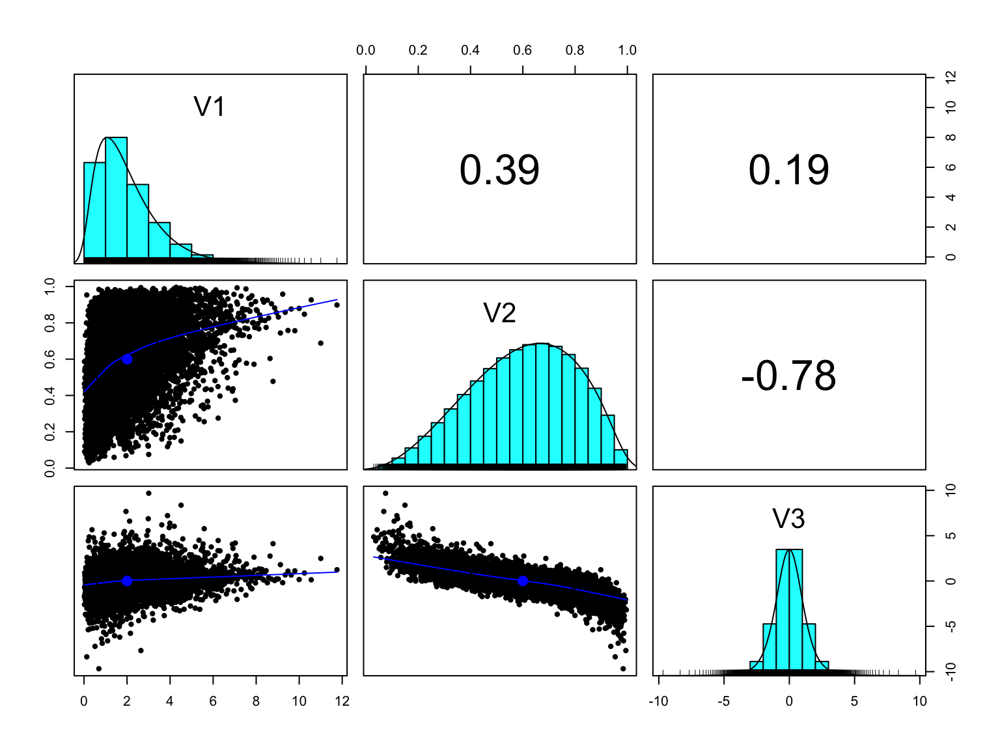
We started with a multivariate normal and we now have a multivariate distribution made of a Gamma, a Beta and a Student t margins but the transformation preserved the dependence structure.
Note that when working with copulas, and in particular when comparing correlations, we use a rank-based correlation like Spearman’s rho or Kendall’s tau rather than the Pearson correlation. As the Spearman and Kendall coefficients are based on the ranks rather than the actual values, they will not be distorted by skewed or asymmetrical margins.
2.4 non-continuous distributions
The Sklar theorem states that for any multivariate distribution with continuous margins, there exists a unique copula \(C\) such that:
\[F(x_1, x_2, \dots, x_d) = C(F_1(x_1), F_2(x_2), \dots, F_d(x_d))\] where:
- \(F\) is the joint CDF,
- \(F_i\) are the marginal CDFs,
- \(C\) is the copula.
However when the margins are non-continuous, this theorem no longer holds and the uniqueness is not guaranteed, see (Nešlehová 2007).
From a practical point, when margins are not continuous, they can no longer be mapped to uniform margins. For example, in the case of a zero-inflated distribution, we would also end up with a spike at zero when taking the pseudo-observations: many observations would have the same rank. In turn, this would mean we would no longer be able to uniquely transform the pseudo-values using the inverse CDF.
3 a practical approach for non-continuous margins
One possible approach to cope with non-continuous margins is to assume they stem from latent continuous variables. We can still generate a random sample from a multivariate copula but then we can map their margins to the desired quantiles, either of a known distribution like the Poisson, or an empirical cumulative distribution. This approach has been explored in the case of Poisson margins in Shmueli (2008). Using any copula, we could still generate a random sample using the observed rank-based correlation (e.g. Spearman), and map each segment of the resulting \(U(0,1)\) to specified discrete values.
Let:
- \(Z \sim N(0,1)\) be a standard normal random variable.
- \(F(z)\) be the CDF of the standard normal distribution. (note that by virtue of the Probability Integral Transform, \(F(z) \sim U(0,1)\)).
- \(G^{−1}(p)\) be the quantile function (inverse CDF) of the target discrete distribution (e.g., Poisson).
- \(Y\) be the mapped discrete random variable.
Then the mapping is: \[Y = G^{-1}(F(z)) = \text{inf}\{x \in \mathbb{Z}_{\geq 0}: G(x) \geq F(z)\}\]
Taking the example of a discrete random variable \(X\) with cumulative distribution defined by: \(P(X \leq 0) = 0.25\). \(P(X \leq 1) = 0.75\). \(P(X \leq 2) = 1\).
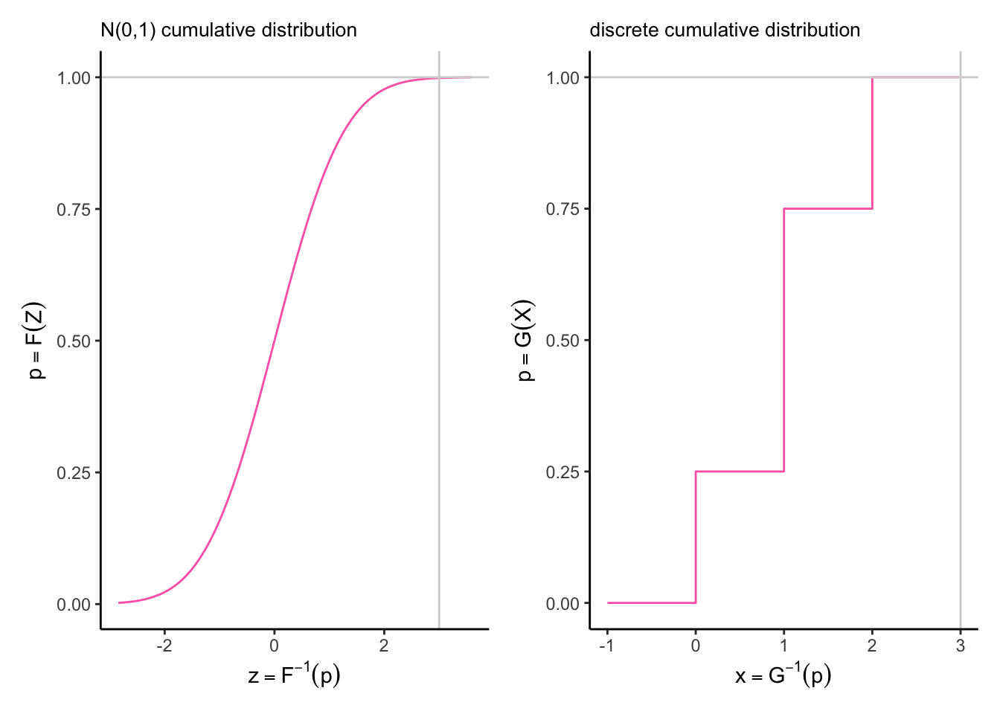
To transform the variable \(Z \sim N(0,1)\) on the left into this discrete cumulative distribution on the right we would use the following mapping:
any value of \(F(z)\) between 0 and 0.25 becomes 0.
any value of \(F(z)\) between 0.25 and 0.75 becomes 1.
any value of \(F(z)\) between 0.25 and 1 becomes 2.
In the following sections we will see how we can reproduce a dataset with discrete margins using a Gaussian copula and the empirical cumulative distribution of each margin, using two examples to illustrate different multivariate non-continuous scenarios. The first example looks at the distribution of the number of films by genre by viewer, the second example is based on time spent listening to different radio stations by person.
In the second example we will see what happens when dealing with zero-inflated or hurdle distributions. In these cases, the mass at zero creates a distortion and the rank-based correlation is not optimal to recover the desired joint zero case. In media research we are often interested in the combined reach of two or more media, for example the probability of watching channel 1 or channel 2 \(P(X_1 > 0 | X_2 > 0)\), which is the same as 1 minus the probability of not watching either \(1 - P(X_1 = 0, X_2 = 0)\) so estimating the joint zero case is of particular importance.
A hurdle distribution can be thought of a two part process where the first part is binary (e.g. users / non users) and the second part is continuous or discrete (e.g. number of items purchased, number of hours listened… ). Then it turns out that using the Tetrachoric correlation (see (“Estimating Correlation from Dichotomized Normal Variables” 2009)) is a much better choice for the simulation if the objective is to preserve the combined reach. In a similar vein, Greenens (2020) suggests using the Yule coefficient.
3.1 example using MovieLense dataset
To provide a reproducible example for the discrete case, we can use the MovieLense dataset that is made available in the R package recommenderlab. It contains about 100,000 ratings from 943 users on 1664 movies. Movie genres are also made available in the MovieLenseMeta dataset so we can derive a multivariate dataset showing the number of items each user has watched from each genre.
3.1.1 preparing the dataset
library(recommenderlab) # to use the MovieLense datasetlibrary(janitor) # to use the clean_names functiondata("MovieLense")str(MovieLense)
Formal class 'realRatingMatrix' [package "recommenderlab"] with 2 slots
..@ data :Formal class 'dgCMatrix' [package "Matrix"] with 6 slots
.. .. ..@ i : int [1:99392] 0 1 4 5 9 12 14 15 16 17 ...
.. .. ..@ p : int [1:1665] 0 452 583 673 882 968 994 1386 1605 1904 ...
.. .. ..@ Dim : int [1:2] 943 1664
.. .. ..@ Dimnames:List of 2
.. .. .. ..$ : chr [1:943] "1" "2" "3" "4" ...
.. .. .. ..$ : chr [1:1664] "Toy Story (1995)" "GoldenEye (1995)" "Four Rooms (1995)" "Get Shorty (1995)" ...
.. .. ..@ x : num [1:99392] 5 4 4 4 4 3 1 5 4 5 ...
.. .. ..@ factors : list()
..@ normalize: NULL
The data is stored as a realRatingMatrix object so we first turn it into a dataframe:
all_genres <-levels(factor(genres_rld$genre))genres_rld %>%group_by(genre) %>%summarise(reach =n_distinct(user_id),n =sum(n) ) %>%ggplot(aes(x = reach, y = genre)) +geom_bar(stat ="identity", fill ="slateblue") +scale_y_discrete(limits=rev) +labs(title ="Movielens: reach by genre")
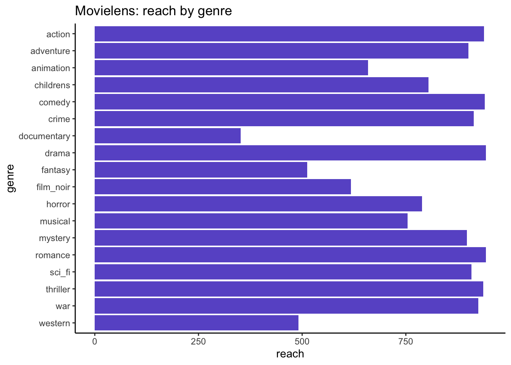
Then for each genre what is the distribution of number of viewed items?
genres_rld_wide <- genres_rld %>%# pivot wider so we can add the zero values:pivot_wider(names_from = genre, values_from = n, values_fill =0) %>%rename(id = user_id)head(genres_rld_wide)
actual_distr %>%filter(value <=10) %>%ggplot(aes(x = value, y = pc, fill = name)) +geom_bar(stat ="identity") +scale_x_continuous(breaks =0:10) +facet_wrap(~name, scales ="free", ncol =3) +theme(legend.position ="none") +labs(title ="MovieLense: distribution of number of films watched (truncated at 10)")
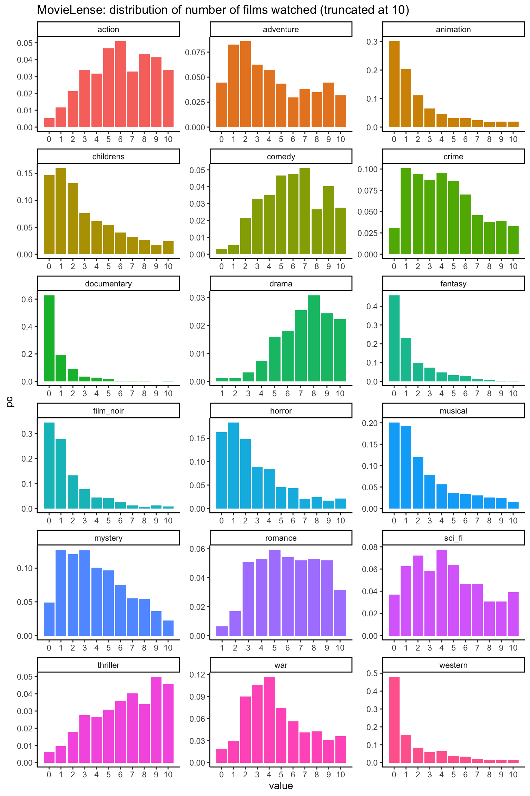
This dataset shows a variety of discrete distributions representing the number of films each person watched for each genre. Note that some distributions like Drama and Romance don’t have a zero value. Everyone in this dataset has watched at least one film.
3.1.2 simulation using Gaussian copula
The Gaussian copula is the easiest to implement as it doesn’t require installing any additional package in R. It can be created using MASS::mvrnorm.
To create a simulation of the genres_rld dataset, we first calculate its Spearman correlation:
Next, we generate a random sample of 100k units from a multivariate Normal using these observed correlations:
n <-100000set.seed(13)simdata <- MASS::mvrnorm(n = n, mu =rep(0, nrow(spearman_cor)), Sigma = spearman_cor )summary(simdata[1:5,])
action adventure animation childrens
Min. :-1.3817 Min. :-1.6258 Min. :-2.351214 Min. :-2.3494
1st Qu.:-0.9830 1st Qu.:-1.1368 1st Qu.:-1.360031 1st Qu.:-0.8189
Median :-0.4934 Median :-0.7353 Median :-0.682401 Median :-0.7727
Mean :-0.5722 Mean :-0.7217 Mean :-0.751267 Mean :-0.6851
3rd Qu.:-0.3034 3rd Qu.:-0.3517 3rd Qu.:-0.008015 3rd Qu.: 0.2231
Max. : 0.3006 Max. : 0.2410 Max. : 0.645323 Max. : 0.2925
comedy crime documentary drama
Min. :-1.3483 Min. :-1.9235 Min. :-2.86456 Min. :-1.8829
1st Qu.:-0.9705 1st Qu.:-0.6761 1st Qu.:-0.69672 1st Qu.:-0.9353
Median :-0.7107 Median : 0.1265 Median :-0.03413 Median :-0.7946
Mean :-0.5316 Mean :-0.3785 Mean :-0.47859 Mean :-0.7699
3rd Qu.:-0.4503 3rd Qu.: 0.2301 3rd Qu.: 0.25707 3rd Qu.:-0.3934
Max. : 0.8218 Max. : 0.3506 Max. : 0.94537 Max. : 0.1568
fantasy film_noir horror musical
Min. :-1.1568 Min. :-1.5314 Min. :-1.4874 Min. :-1.8693
1st Qu.:-0.8651 1st Qu.:-0.6781 1st Qu.:-0.7694 1st Qu.:-1.0213
Median :-0.2646 Median :-0.4907 Median :-0.5717 Median :-1.0016
Mean :-0.1923 Mean :-0.5074 Mean :-0.5355 Mean :-0.7014
3rd Qu.: 0.4770 3rd Qu.:-0.1773 3rd Qu.:-0.2256 3rd Qu.:-0.2046
Max. : 0.8482 Max. : 0.3405 Max. : 0.3767 Max. : 0.5898
mystery romance sci_fi thriller
Min. :-1.5326 Min. :-1.6708 Min. :-0.9721 Min. :-1.5443
1st Qu.:-0.3824 1st Qu.:-1.1107 1st Qu.:-0.7636 1st Qu.:-0.8727
Median :-0.1736 Median :-0.6660 Median :-0.4596 Median :-0.5293
Mean :-0.2116 Mean :-0.7377 Mean :-0.3985 Mean :-0.5975
3rd Qu.: 0.2609 3rd Qu.:-0.5148 3rd Qu.:-0.3145 3rd Qu.:-0.2432
Max. : 0.7697 Max. : 0.2736 Max. : 0.5173 Max. : 0.2019
war western
Min. :-1.28294 Min. :-2.0486
1st Qu.:-0.99671 1st Qu.:-0.9132
Median :-0.48773 Median :-0.8956
Mean :-0.49834 Mean :-0.7299
3rd Qu.: 0.00547 3rd Qu.:-0.4066
Max. : 0.27018 Max. : 0.6147
We now have a multivariate normal where the margins are \(N(0,1)\) and the correlation is the observed Spearman correlation of the original dataset.
Next we map the cumulative distributions of these \(N(0,1)\) margins to the observed cumulative distributions.
Let’s walk through the process using the Documentary genre as it has the lowest number of distinct values:
i =7# index for Documentariesactual_var_distr <- actual_distr %>%filter(name == all_genres[i])actual_var_distr %>%summarise(n =n(),min =min(value),max =max(value) )
# A tibble: 1 × 3
n min max
<int> <int> <int>
1 13 0 20
We have 13 distinct possible values for this distribution, ranging from 0 to 20.
actual_var_distr %>%ungroup() %>%mutate(prev_cumpc =ifelse(is.na(lag(cumpc)), 0, lag(cumpc))) %>%filter(value <3| value >10) %>%select(value, n, prev_cumpc, cumpc)
Following the actual cumulative distribution, in our simulated datset we will also want:
- anything under 62.7% to be mapped to 0.
- anything between 62.7% and 82.1% to be mapped to 1.
- etc….
- anything > 99.9% to be mapped to 20.
Take the corresponding margin in our simulation:
s <- simdata[, i]summary(s)
Min. 1st Qu. Median Mean 3rd Qu. Max.
-4.342483 -0.668564 0.002788 0.003698 0.676800 4.573686
Plot the cumulative distribution of our actual margin and the result of the MVN simulation before transformation:
rbind(# actual cumulative distribution for genre = "action": actual_var_distr %>%mutate(source ="actual") %>%ungroup() %>%select(source, value, cumpc),# untransformed simulated cumulative distribution for genre = "action":data.frame(name = all_genres[i],value =round(s, digits =1) ) %>%group_by(name, value) %>%summarise(n =n()) %>%mutate(pc = n /sum(n),cumpc =cumsum(pc),source ="sim" ) %>%ungroup() %>%select(source, value, cumpc)) %>%ggplot(aes(x = value, y = cumpc, col = source)) +geom_line() +scale_color_manual(values=c("slateblue1", "darkorange")) +facet_wrap(~source, scales ="free") +theme(legend.position ="none") +labs(title ="cumulative distribution for genre = documentary")
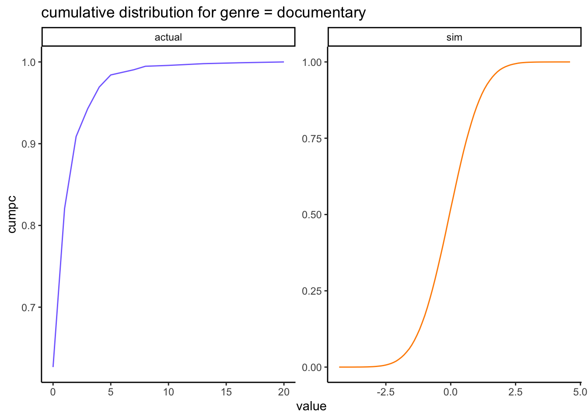
The untransformed simulated margin in orange is the cumulative distribution of a \(N(0,1)\) and we want to transform all its values so it looks like the observed margin in blue.
Find the critical values so we can map the simulated values to these probabilities:
So in our simulated margin, we will map:
- anything that is \(\leq 0.3258\) to zero,
- anything that is \(> 0.3258\) and \(\leq 0.9196\) to one,
- etc…
- anything that is \(> 4.574\) to 20
To define the breaks for the cut function, we also need a lower bound which is the minimum of the simulated margin:
Note that the last cut isn’t quite right: due to rounding, the maximum value of the distribution ends up in the NA category, when it should be in the last break. This will have to be corrected when we apply the critical values.
Cut the simulated normal data according to the breaks given by the crv table:
value
Min. : 0.000
1st Qu.: 0.000
Median : 0.000
Mean : 0.804
3rd Qu.: 1.000
Max. :20.000
Once transformed in this way, our simulated margin matches the observed distribution exactly:
rbind(# actual cumulative distribution for genre = "documentary": actual_var_distr %>%mutate(source ="actual") %>%ungroup() %>%select(source, value, cumpc),# untransformed simulated cumulative distribution for genre = "documentary":data.frame(genre = all_genres[i],value =round(s, digits =1) ) %>%group_by(genre, value) %>%summarise(n =n()) %>%mutate(pc = n /sum(n),cumpc =cumsum(pc),source ="sim untransformed" ) %>%ungroup() %>%select(source, value, cumpc),# transformed simulated cumulative distribution for genre = "documentary":data.frame(value = sim_temp ) %>%group_by(value) %>%summarise(n =n()) %>%mutate(pc = n /sum(n),cumpc =cumsum(pc),source ="sim transformed" ) %>%ungroup() %>%select(source, value, cumpc)) %>%mutate(source =factor( source, levels =c("actual", "sim untransformed", "sim transformed")) ) %>%ggplot(aes(x = value, y = cumpc, col = source)) +geom_line() +scale_color_manual(values=c("slateblue1", "violetred", "darkorange")) +facet_wrap(~source, scales ="free") +theme(legend.position ="none") +labs(title ="cumulative distribution for genre = documentary")
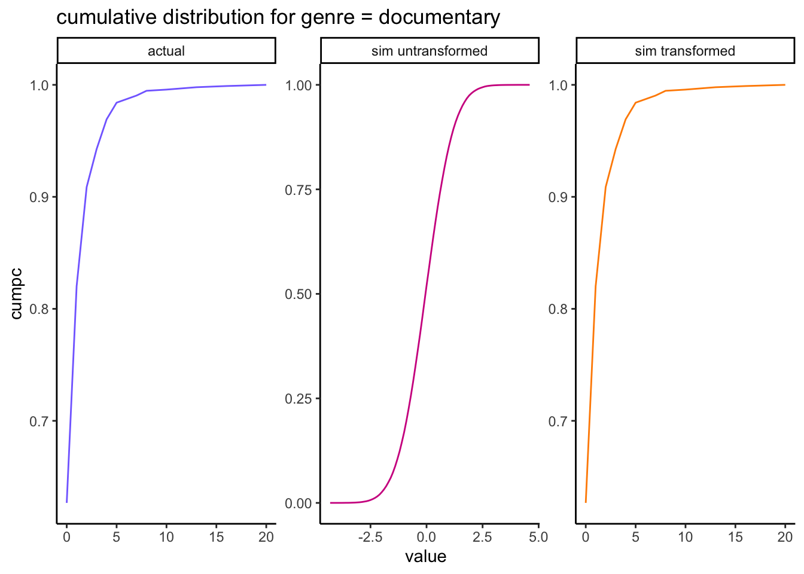
The resulting transformed margin in orange matches the actual margin in blue exactly.
Let’s apply this transformation to each margin:
simulation_fc <-function(actual_distr, cor_mat, sample_size){#' Calculates the items joint reach per weight of usage category.#'#' @param actual_distr A data frame containing the name, value, n, pc, cumpc for each variable.#' @param cor_mat A matrix containing the correlation.#' @param sample_size The number of units required for the simulated dataset#' @return The simulated dataset. #' simdata <- MASS::mvrnorm(n = sample_size, mu =rep(0, nrow(cor_mat)), Sigma = cor_mat )# make copy so we can replace each column with their corrected values: sim_copy <- simdata names <-colnames(cor_mat)for (i in1:length(names)) { s <- sim_copy[, i] actual_var_distr <- actual_distr %>%filter(name == names[i])# Find the critical values so we can map the simulated values to these probabilities: crv =as.vector(c(min(s), quantile(s, actual_var_distr$cumpc)))# Cut the simulated normal data according to the breaks given by the crv table: temp <-cut( s,right =TRUE,include.lowest =TRUE,breaks = crv,labels = actual_var_distr$value )# Convert the levels back to numeric values: sim_temp <-data.frame(value =as.numeric(as.character(temp)))# if by bad luck we have an NA, this may be to do with rounding of the crv...# => replace with the max value: sim_temp[is.na(sim_temp)] <-max(actual_var_distr$value, na.rm =TRUE)# transform these levels back into our values: sim_copy[, i] <- sim_temp$value }return(as.data.frame(sim_copy))}sim_db <-simulation_fc(actual_distr = actual_distr,cor_mat = spearman_cor,sample_size =100000)head(sim_db)
The margins are an exact match (the actual and simulated densities are the same and can’t be distinguished in the above plots) so any subsequent calculations based on summing the values will be preserved.
3.1.4 bivariate comparison
To start with, we can compare the Spearman correlations in the original and simulated datasets:
compare_corrs %>%ggplot(aes(x = actual, y = sim)) +geom_point(col ="maroon") +geom_abline(slope =1, col ="grey") +labs(title ="genre pairwise Spearman correlations",x ="actual correlations", y ="simulated correlations" )
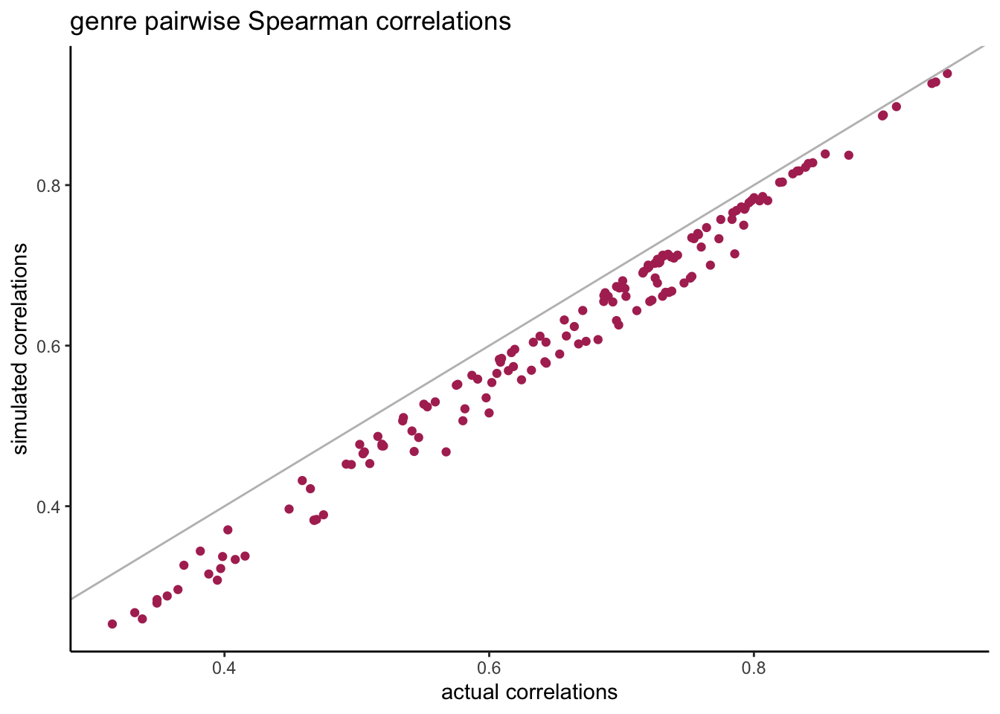
We see that the pairwise correlations are always a little bit lower than their original correlations but they’re still very close.
The correlation is just one summary value for the entire bivariate distribution, but how well did this work in the entire distribution? Do we have the expected percentages in the tails of the bivariate distributions? To illustrate this we create 4 categories for each univariate:
- cat0: non-users.
- cat1: light users (first tertile based on non-null values).
- cat2: medium users (second tertile based on non-null values).
- cat3: heavy users (third tertile based on non-null values).
Then we calculate the percentage reach for all pairs of genres and all categories: P(X = cat0 and Y = cat0) etc…
# create all possible pairs of genres:my_grid <-expand.grid(var1 = all_genres,var2 = all_genres,stringsAsFactors =FALSE) %>%arrange(var1, var2) %>%filter(var1 < var2)joint_reach_categories_fc <-function(my_grid, actual_db, sim_db, my_source){#' Calculates the items joint reach per weight of usage category.#'#' @param my_grid A data frame containing all distinct pairwise combinations.#' @param actual_db A data frame containing an id column and one column per item.#' @param sim_db A data frame containing one column per item.#' @param my_source A string containing the name of the source.#' @return The pairwise reach for each item combination and each category. #' my_list <-list()for(i in1:nrow(my_grid)){ var1 <- my_grid$var1[i] var2 <- my_grid$var2[i] actual_long <-rbind(# separate the zeros and assign tertile = 0: actual_db %>%select(all_of(c("id", var1, var2))) %>%pivot_longer(var1:var2, names_to ="var", values_to ="n") %>%filter( var %in%c(var1, var2), n ==0 ) %>%group_by(var) %>%mutate(tertile =0),# calculate the tertile of each distribution excluding zero: actual_db %>%select(all_of(c("id", var1, var2))) %>%pivot_longer(var1:var2, names_to ="var", values_to ="n") %>%filter( var %in%c(var1, var2), n >0 ) %>%group_by(var) %>%mutate(tertile =ntile(n, 3)) ) actual_wide <- actual_long %>%select(-n) %>%pivot_wider(names_from = var, values_from = tertile) # same with the results from the simulation: sim_long <-rbind(# separate the zeros and assign tertile = 0: sim_db %>%mutate(id =row_number()) %>%select(all_of(c("id", var1, var2))) %>%pivot_longer(var1:var2, names_to ="var", values_to ="n") %>%filter( var %in%c(var1, var2), n ==0 ) %>%group_by(var) %>%mutate(tertile =0),# calculate the tertile of each distribution excluding zero: sim_db %>%mutate(id =row_number()) %>%select(all_of(c("id", var1, var2))) %>%pivot_longer(var1:var2, names_to ="var", values_to ="n") %>%filter( var %in%c(var1, var2), n >0 ) %>%group_by(var) %>%mutate(tertile =ntile(n, 3)) ) sim_wide <- sim_long %>%select(-n) %>%pivot_wider(names_from = var, values_from = tertile) # add results to the list: my_list[[i]] <-rbind( actual_wide %>%summarise(cat0 =sum(!!sym(var1) ==0&!!sym(var2) ==0)/nrow(actual_wide),cat1 =sum(!!sym(var1) ==1&!!sym(var2) ==1)/nrow(actual_wide),cat2 =sum(!!sym(var1) ==2&!!sym(var2) ==2)/nrow(actual_wide),cat3 =sum(!!sym(var1) ==3&!!sym(var2) ==3)/nrow(actual_wide) ) %>%mutate(source ="actual", var1 = var1, var2 = var2), sim_wide %>%summarise(cat0 =sum(!!sym(var1) ==0&!!sym(var2) ==0)/nrow(sim_wide),cat1 =sum(!!sym(var1) ==1&!!sym(var2) ==1)/nrow(sim_wide),cat2 =sum(!!sym(var1) ==2&!!sym(var2) ==2)/nrow(sim_wide),cat3 =sum(!!sym(var1) ==3&!!sym(var2) ==3)/nrow(sim_wide) ) %>%mutate(source = my_source, var1 = var1, var2 = var2) ) } results <-bind_rows(my_list)return(results)}results <-joint_reach_categories_fc(my_grid = my_grid, actual_db = genres_rld_wide, sim_db = sim_db,my_source ="sim" )head(results)
When looking at the pairwise distributions we notice that:
- the non-users of both genres (cat0) tend to be slightly over-estimated but not much.
- the heavy-users of both genres (cat3) are systematically under-estimated.
Maybe the Gaussian copula isn’t the best choice for the dependence structure and we could do better with a copula that has a different shape at the tails. Overall this is still very close to the actual bivariate distributions.
3.1.5 multivariate comparison
In the previous section we checked the combined reach levels for each pair of genres, but what happens when we calculate the combined reach for 2, 3, 4… all genres? As all users in this dataset have watch at least one drama and one romance film the fully combined reach across all genres will be 1, so let’s start with the smallest genres and add the next bigger genre at each step.
multivariate_comparison %>%ggplot(aes(x = actual_pc, y = sim_pc)) +geom_point(col ="slateblue") +geom_abline(slope =1, col ="grey") +scale_x_continuous(labels = scales::percent) +scale_y_continuous(labels = scales::percent) +labs(title ="V1: actual vs simulated combined reach")
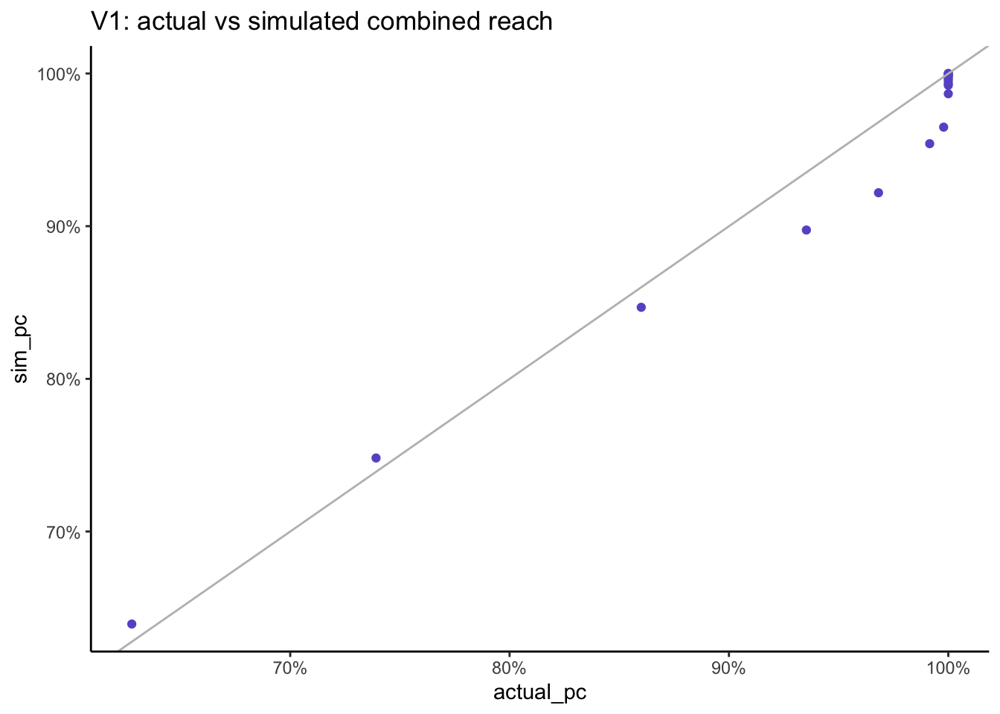
For the first couple of combinations the simulated result are slightly bigger that the actual combined reach but after that, we go in the other direction and the simulated result is slightly lower than the actual result. Note that as everyone in this dataset has watched at least one film, we get to 100% reach when looking across all genres.
3.1.6 conclusion
In this section we demonstrated how we can recreate a simulation of a multivariate discrete distribution with a Gaussian copula using just their Spearman correlation and their empirical cumulative marginal distributions. The resulting simulation has margins that match the original ones exactly, so there is no loss of volume (in this case the total number of films watched), and the multivariate relationships have also been very well preserved.
3.2 example using radio listening dataset
When working with media usage, distributions typically exhibit a high level of zero for the non-users. Here we show what happens when using the Spearman correlation and we compare it with the results using the Tetrachoric correlation.
In media planning, the negative binomial distribution (NBD) is widely use for Reach and Frequency models, based on the work of Mr A.S.C. Ehrenberg (Ehrenberg 1959). When fitting the NBD, the method typically used is not the method of moments or of maximum likelihood, but is based on preserving the probability at zero \(P(X)=0\) and the total volume (e.g. total impressions, purchases, …) via the mean. In doing so, the currencies are preserved (no loss in volume) and so is the observed reach. It is with these same objectives in mind of preserving reach and volume that the following approach is also based.
In this example, the dataset was created using R’s synthpop package (Dibben 2016) and is based on the radio listening (time spent in minutes) of 11 stations from RAJAR data from 2019Q1. It contains 100k synthetic respondents and is available from github
db <-read.csv("syn_listening_db.csv")summary(db)
id st1 st2 st3
Min. : 1 Min. : 0.00 Min. : 0.000 Min. : 0.0
1st Qu.: 25001 1st Qu.: 0.00 1st Qu.: 0.000 1st Qu.: 0.0
Median : 50000 Median : 0.00 Median : 0.000 Median : 0.0
Mean : 50000 Mean : 61.94 Mean : 3.532 Mean : 229.6
3rd Qu.: 75000 3rd Qu.: 0.00 3rd Qu.: 0.000 3rd Qu.: 120.0
Max. :100000 Max. :7530.00 Max. :5640.000 Max. :7830.0
st4 st5 st6 st7
Min. : 0.00 Min. : 0.0 Min. : 0.00 Min. : 0.00
1st Qu.: 0.00 1st Qu.: 0.0 1st Qu.: 0.00 1st Qu.: 0.00
Median : 0.00 Median : 0.0 Median : 0.00 Median : 0.00
Mean : 15.76 Mean : 153.3 Mean : 16.62 Mean : 42.46
3rd Qu.: 0.00 3rd Qu.: 0.0 3rd Qu.: 0.00 3rd Qu.: 0.00
Max. :6495.00 Max. :7695.0 Max. :5640.00 Max. :5895.00
st8 st9 st10 st11
Min. : 0.000 Min. : 0.00 Min. : 0.000 Min. : 0.000
1st Qu.: 0.000 1st Qu.: 0.00 1st Qu.: 0.000 1st Qu.: 0.000
Median : 0.000 Median : 0.00 Median : 0.000 Median : 0.000
Mean : 4.179 Mean : 26.68 Mean : 1.768 Mean : 8.761
3rd Qu.: 0.000 3rd Qu.: 0.00 3rd Qu.: 0.000 3rd Qu.: 0.000
Max. :1965.000 Max. :6360.00 Max. :4200.000 Max. :5745.000
Given just a correlation matrix and the empirical marginal cumulative distributions, can we recreate a simulated dataset that preserves the multivariate distribution of the original dataset?
stations <-names(db)[2:ncol(db)]db %>%pivot_longer(all_of(stations), names_to ="station") %>%mutate(station =factor(station, levels = stations)) %>%group_by(station) %>%summarise(reach_pc =sum(value >0) /n()) %>%ggplot(aes(x = reach_pc, y = station)) +geom_bar(stat ="identity", fill ="slateblue") +scale_x_continuous(labels = scales::percent) +scale_y_discrete(limits=rev) +labs(title ="Radio: reach% by station", x ="reach%")
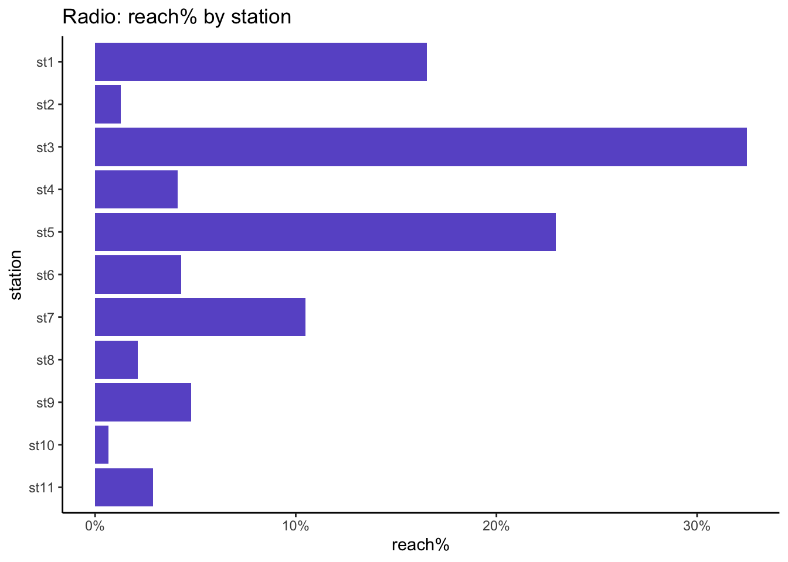
Then for each station what is the distribution of time spent in minutes?
actual_distr <- db %>%pivot_longer(all_of(stations)) %>%group_by(name, value) %>%summarise(n =n()) %>%group_by(name) %>%mutate(pc = n /sum(n),cumpc =cumsum(pc) ) head(actual_distr)
# A tibble: 6 × 5
# Groups: name [1]
name value n pc cumpc
<chr> <int> <int> <dbl> <dbl>
1 st1 0 83461 0.835 0.835
2 st1 5 9 0.00009 0.835
3 st1 7 56 0.00056 0.835
4 st1 10 9 0.00009 0.835
5 st1 12 4 0.00004 0.835
6 st1 15 916 0.00916 0.845
Plot the distribution of the margins, excluding zeros:
actual_distr %>%filter(value >0) %>%mutate(hours =cut(value/60, breaks =0:135)) %>%group_by(name, hours) %>%summarise(n =sum(n)) %>%ggplot(aes(x = hours, y = n, fill = name)) +geom_bar(stat ="identity") +facet_wrap(~name, scales ="free", ncol =3) +theme(legend.position ="none",axis.text.x=element_blank(),axis.ticks.x=element_blank() ) +labs(title ="radio: distribution of number of hours (excl. zero)")
The distribution of time spent is similar for all stations: it dies away quickly and has a long tail.
3.2.1 using Spearman correlation
To create a simulation of the radio dataset, we first calculate its Spearman correlation:
spearman_cor <- db %>%select(-id) %>%cor(method ="spearman")spearman_cor[1:5, 1:5]
Min. 1st Qu. Median Mean 3rd Qu. Max.
-0.118059 -0.009163 0.024514 0.042897 0.064182 0.305998
Next, we create a simulation using 100k sampling units from a multivariate Normal using these observed correlations and we map the cumulative distributions of these \(N(0,1)\) margins to the observed cumulative distributions.
The simulated dataset match the reach and total hours of the actual dataset for all stations.
3.2.1.1 univariate comparison
As we have mapped each \(N(0,1)\) margin to the observed marginal distributions, there should be no difference between actual and simulated margins:
rbind( db %>%pivot_longer(all_of(stations)) %>%select(-id) %>%mutate(source ="actual"), radio_sim_db_v1 %>%pivot_longer(all_of(stations)) %>%mutate(source ="sim")) %>%filter(value >0, value <600) %>%ggplot(aes(x = value, col = source)) +geom_density() +facet_wrap(~name, ncol =3) +labs(title ="actual vs simulated genre distributions") +theme(legend.position ="bottom")
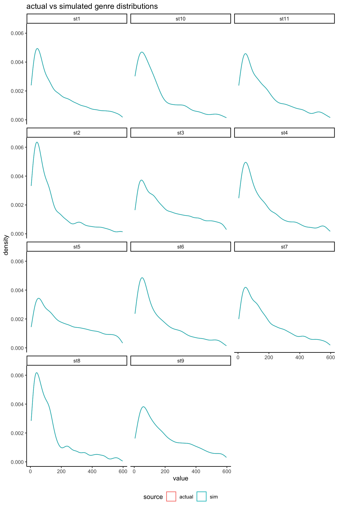
As expected, margins are an exact match (the actual and simulated densities can’t be distinguished in the above plot) so any subsequent calculations based on summing the values will be preserved.
3.2.1.2 bivariate comparison
To start with, we can compare the Spearman correlations in the original and simulated datasets:
compare_corrs %>%ggplot(aes(x = actual, y = sim)) +geom_point(col ="maroon") +geom_abline(slope =1, col ="grey") +expand_limits(x =c(-0.2, 0.3), y =c(-0.2, 0.3)) +labs(title ="V1: genre pairwise Spearman correlations",x ="actual correlations", y ="simulated correlations" )
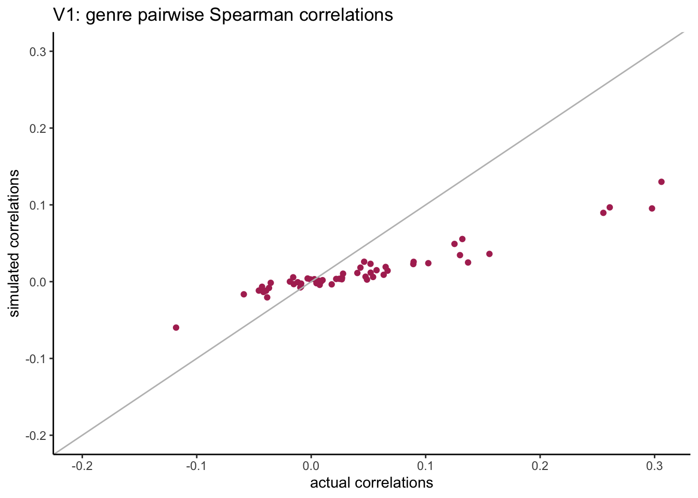
We see that the simulated pairwise correlations have a much smaller span compared with original correlations.
Next we can check the bivariate results for each pair of stations. To do this, we create 4 categories for each univariate:
- cat0: non-users.
- cat1: light users (first tertile based on non-null values).
- cat2: medium users (second tertile based on non-null values).
- cat3: heavy users (third tertile based on non-null values).
Then we calculate the percentage reach for all pairs of genres and all categories: P(X = cat0 and Y = cat0) etc…
# create all possible pairs of genres:my_grid <-expand.grid(var1 = stations,var2 = stations,stringsAsFactors =FALSE) %>%arrange(var1, var2) %>%filter(var1 < var2)results_v1 <-joint_reach_categories_fc(my_grid = my_grid, actual_db = db, sim_db = radio_sim_db_v1,my_source ="sim_v1" )head(results_v1)
When looking at the pairwise distributions we notice that:
- the non-users of both genres (cat0) are well aligned with small differences.
- the light-users of both genres (cat1) are systematically under-estimated.
There is quite a spread in the weight of listening categories but these are based on very small sample size, and what matters most are the combined zero categories.
3.2.1.3 multivariate comparison
What happens when we calculate the reach for 2, 3, 4… all genres? let’s start with the smallest genres and add the next bigger genre at each step.
multivariate_v1 %>%ggplot(aes(x = actual_pc, y = sim_pc)) +geom_point(col ="slateblue") +geom_abline(slope =1, col ="grey") +scale_x_continuous(labels = scales::percent) +scale_y_continuous(labels = scales::percent) +labs(title ="V1: actual vs simulated combined reach")
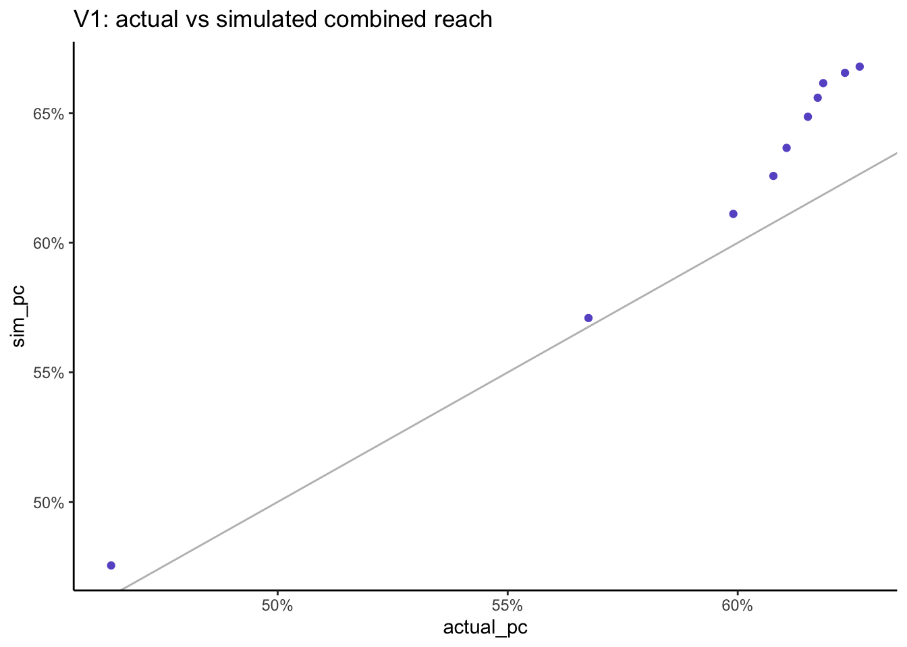
=> as we increase the number of stations past the first 3, the simulated result gets progressively higher than the actual result as we are accumlating error.
When we combine the reach across all stations, the actual reach is 62.7% but the simulated reach is higher at 66.8%.
3.2.2 using Tetrachoric correlation
The polychoric correlation is a technique for estimating the correlation between two hypothesised normally distributed continuous latent variables, from two observed ordinal variables. Tetrachoric correlation is a special case of the polychoric correlation applicable when both observed variables are dichotomous. (source: wikipedia).
In R, we can use the convenient function psych::phi2tetra to find the Tetrachoric correlation that corresponds to the combination of a “Phi coefficient”, i.e. the correlation between the two binary vectors, as well as their marginals.
Calculate the tetrachoric correlation for all pairs of genres that include the zero value:
# create all possible pairs of genres:all_pairs <-expand.grid(var1 = stations,var2 = stations,stringsAsFactors =FALSE) %>%arrange(var1, var2) %>%filter(var1 < var2) %>%mutate(phi_coef =NA,tcc =NA )for(i in1:nrow(all_pairs)){ n <-nrow(db) v1 <- all_pairs$var1[i] v2 <- all_pairs$var2[i]# transform the 1st genre to binary: x1 <- db %>%select(!!sym(v1)) %>%rename(v1 =!!sym(v1)) %>%mutate(v1 =ifelse(v1 >0, 1, 0)) %>%pull(v1)# transform the 2nd genre to binary: x2 <- db %>%select(!!sym(v2)) %>%rename(v2 =!!sym(v2)) %>%mutate(v2 =ifelse(v2 >0, 1, 0)) %>%pull(v2)# calculate the phi coefficient: all_pairs$phi_coef[i] <-cor(x1, x2)# convert to tetrachoric correlation: all_pairs$tcc[i] <-phi2tetra(ph =cor(x1, x2), m =c(mean(x1), mean(x2)) )}all_pairs %>%arrange(desc(tcc)) %>%head()
compare_corrs %>%ggplot(aes(x = actual, y = sim)) +geom_point(col ="maroon") +geom_abline(slope =1, col ="grey") +expand_limits(x =c(-0.2, 0.3), y =c(-0.2, 0.3)) +labs(title ="V2: genre pairwise Spearman correlations",x ="actual correlations", y ="simulated correlations" )
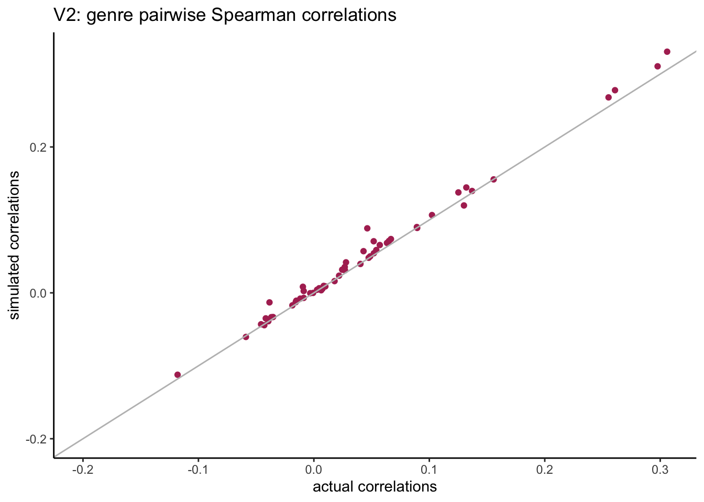
Previously we saw that when using the Spearman correlations the resulting simulated correlations had a much smaller span compared with original correlations. When we switch to the Tetrachoric correlation, the resulting simulated correlations are much closer to the actual ones.
Next we can check the bivariate results for each pair of stations. To do this, we create 4 categories for each univariate:
- cat0: non-users.
- cat1: light users (first tertile based on non-null values).
- cat2: medium users (second tertile based on non-null values).
- cat3: heavy users (third tertile based on non-null values).
Then we calculate the percentage reach for all pairs of genres and all categories: P(X = cat0 and Y = cat0) etc…
# create all possible pairs of genres:my_grid <-expand.grid(var1 = stations,var2 = stations,stringsAsFactors =FALSE) %>%arrange(var1, var2) %>%filter(var1 < var2)results_v2 <-joint_reach_categories_fc(my_grid = my_grid, actual_db = db, sim_db = radio_sim_db_v2,my_source ="sim_v2" )head(results_v2)
=> when looking at the pairwise distributions we notice that:
- the non-users of both stations (cat0) are well aligned with almost zero differences.
- the light-users of both stations (cat1) are systematically under-estimated but this is based on very small sample sizes.
3.2.2.3 multivariate comparison
What happens when we calculate the reach for 2, 3, 4… all genres? let’s start with the smallest genres and add the next bigger genre at each step.
multivariate_v2 %>%ggplot(aes(x = actual_pc, y = sim_pc)) +geom_point(col ="slateblue") +geom_abline(slope =1, col ="grey") +scale_x_continuous(labels = scales::percent) +scale_y_continuous(labels = scales::percent) +labs(title ="V2: actual vs simulated combined reach")
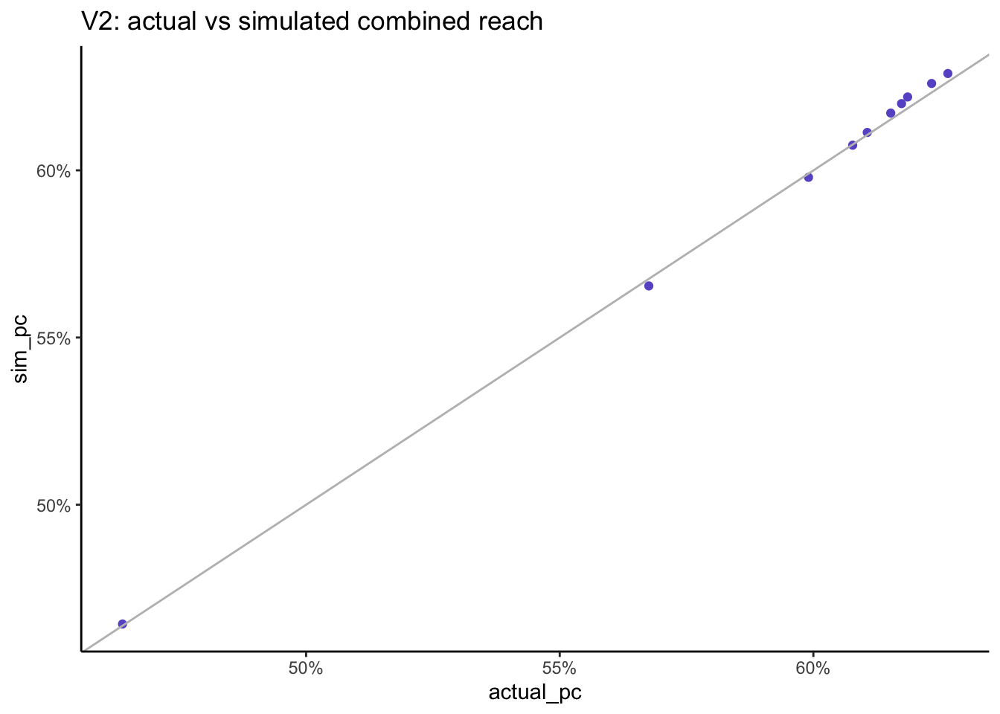
As we increase the number of stations the simulated combined reach remains very close to the actual combined reach which is a much better result than when using the Speaerman correlation.
When we combine the reach across all stations, the actual reach is 62.7% and now the simulated reach is 62.9% which is much better than when we used Spearman correlation.
Note that although this analysis is based on a synthetic dataset, the exact same results were found with the original RAJAR data.
3.2.3 conclusion
Starting with a random sample generated from a multivariate normal using the Tetrachoric correlations between all stations, each resulting margin was then transformed to match the observed time spent distribution for each station using their empirical quantiles.
The resulting simulated dataset preserved all pairs joint reach but also the combined reach from any number of stations. It also preserved the total time spent for all stations. The joint distribution of light / medium / heavy listening was reasonable but is based on much smaller sample sizes.
The main objectives of media planning are to preserve combined reach and total volumes. When using data fusion, any resulting differences in the currencies are corrected through calibration, however the same cannot be done for the reach. Using copulas, there is no need for calibration and the combined reach is preserved.
3.3 application to measuring local cross media usage
In practice of course we don’t have a single source currency multi-media dataset but we may still have some relevant cross-media information that we want to incorporate.
When trying to join distributions from different data sources, the easiest approach is to assume they are independent, then the joint zero is just the product of the individual zeros: \(P(X_1 = 0, X_2 = 0) = P(X_1 = 0) P(X_2 = 0)\). In media planning, this is referred to as the Sainsbury formula. However we may have evidence from a separate study that two media are in fact dependent and the problem is then to find a way of incorporating this knowledge to provide a better estimate of cross media reach.
For example in the UK, to measure joint media reach at a local level, we may still be able to use the currencies for each media as long as they provide sufficient data points in each local area. To join them, we can use information from a separate cross media data source that measures the same media but at a higher relevant geographical level. Whilst not perfect, this gives us a much more realistic cross media dependence structure than the hypothesis of independence.
This approach is currently used to estimate the BBC’s cross media reach for local content in each local area, as defined by the local radio stations measurement footprint.
4 conclusion
In this article we show a practical way of modelling a multivariate distribution ensuring that the joint zeros (combined reach) and the volumes (total number of items or time spent) are preserved, as is the common objective when modelling univariate reach and frequency in media measurement. The use of the Tetrachoric correlation ensures that we can incorporate any knowledge we may have about the joint zeros. This approach can be used to model multi-media usage while preserving the currencies. It could be further developed to incorporate other important planning variables such as demographics and used as an alternative or complement to data fusion.
5 References
Dibben, Beata Nowok, Gillian M. Raab, Chris. 2016. “Synthpop: Bespoke Creation of Synthetic Data in r.”Journal of Statistical Software. https://doi.org/10.18637/jss.v074.i11.
“Estimating Correlation from Dichotomized Normal Variables.” 2009. Journal of Statistical Planning and Inference 139 (11): 3785–94. https://doi.org/https://doi.org/10.1016/j.jspi.2009.05.031.
Sklar, S. W. 1959. “Fonctions de Répartition à n Dimension Et Leurs Marges.”Publications de l’Institut de Statistique de l’Université de Paris, 229–31. https://doi.org/10.2139/ssrn.4198458.